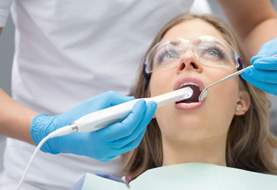
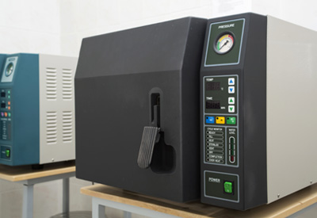

The Intraoral Camera

The intraoral camera is an excellent visual tool that allows the patient to see exactly what the dentist sees in their mouths. They say a picture is worth a thousand words and this revolutionary diagnostic dental instrument eliminates any confusion between doctor and patient when communicating treatment options. Capturing images with the intraoral camera is painless and there is no radiation exposure risk as visible light is used to generate the photographs.

Our Infection Control & Sterilization System
At Dental Care clinic , safety of our patients is our primary concern. Your dental health continues to be one of our priorities. An infection control department has been installed at all our centers headed by a dentist with expertise in sterilization and infection control to ensure our patients the highest level of sterilization according to international standards.